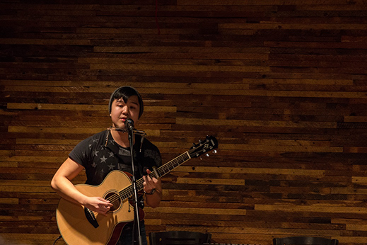
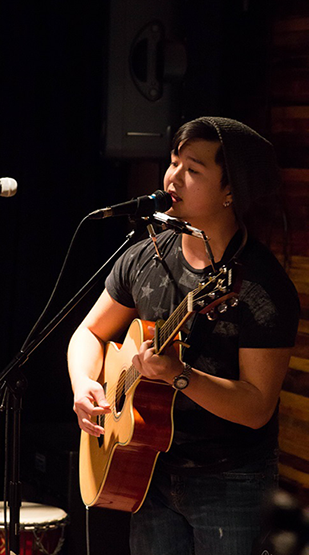

EVAN YUE

Article by Edith Nataprawira
Photos by Kelsey Giesbrecht
Uploaded on March 29, 2015
You might have seen him before at Open Mic Night at the Rams: the amazing one-man-band, complete with a guitar, harmonica, bass drum, and of course, vocals at the same time. His name is Evan Yue, and is a first year Mathematics student at Ryerson University.
Yue has a long-standing interest in music. When he was young, his dad introduced him to classic rock. When he was 11 years old and given the choice between electric guitar and acoustic guitar, Yue chose electric since it would allow him the chance to perform the metal and rock music he was interested in. However, in high school, he received vocal training for about two months and joined a vocal jazz group. He credits his high school vocal teacher for pushing his music to the next level. Since then, his interests have shifted to accommodate a wider genre range. “It’s funny how musical tastes change over time,” Yue reflects.
The next major development in his musical growth was seeing Australian-born musician Kim Churchill performing at the Buskerfest in Toronto four years ago. Churchill’s style of playing multiple instruments at once inspired Yue to add percussion and harmonica to his repertoire. When asked if the addition of more instruments was challenging, Yue answered that he had been playing guitar for long enough that it came as second nature. The harmonica, he reflected, was a relatively simple instrument to pick. Although there are a number of musicians that Yue admires, seeing Churchill perform marked another developmental milestone. Now, Yue generally plays a mix of folk, blues and rock and continues to explore other possibilities. However, a career in music isn’t a possibility he is considering right now.
“It’s kind of something I do more for myself, my friends and my family. The first time I played [before an audience] it was so nerve wracking,” Yue confesses. But over time, Yue found something valuable in live performance and in the shared experience between audience and performer. He enjoys playing at open mics and festivals, but is not currently planning to record any EPs. “I’ll see where the road takes me, but I’m definitely going to keep playing,” he says.
Yue recently created a Youtube channel to share his music. To check out the musical stylings of this one-man band, visit:
https://www.youtube.com/channel/UC3eA9kk7sVoSOJuoFFSvlKw

back to spotlight